About Me
I'm a driven developer, recently graduated in Programming from NTNU Gjøvik,
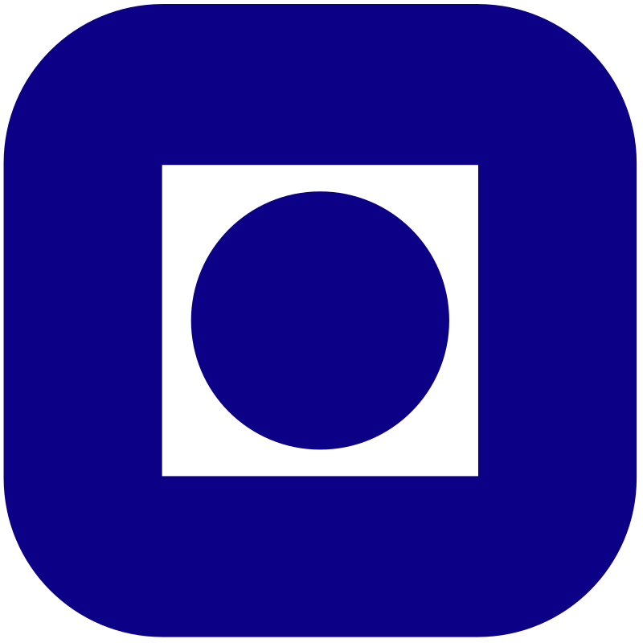
and excited to apply my skills and passions.
About Me
Learning about the world around me has always been my greatest obsession. From a young age I used to pick apart every device I could find, learning
from every device: the design patterns, the function of every piece and how the pieces fit to make something new.
This has made me really good at fixing broken devices and seeing how new technologies can improve upon old systems.
In middle school I was very interested in how games were made. I was fascinated by online devlogs and dabbled in some RPG Maker.
This led to one of my earliest projects, a Raspberry Pi handheld game console, where I could upload my own games.
By combining a Raspberry Pi, a tiny LCD display, two free merchandise power banks, an old Xbox controller and some Legos for the case. I loaded up some old game emulators.
Unfortunately it wasn't powerful enough to run the game made in RPG Maker.
Picture of me
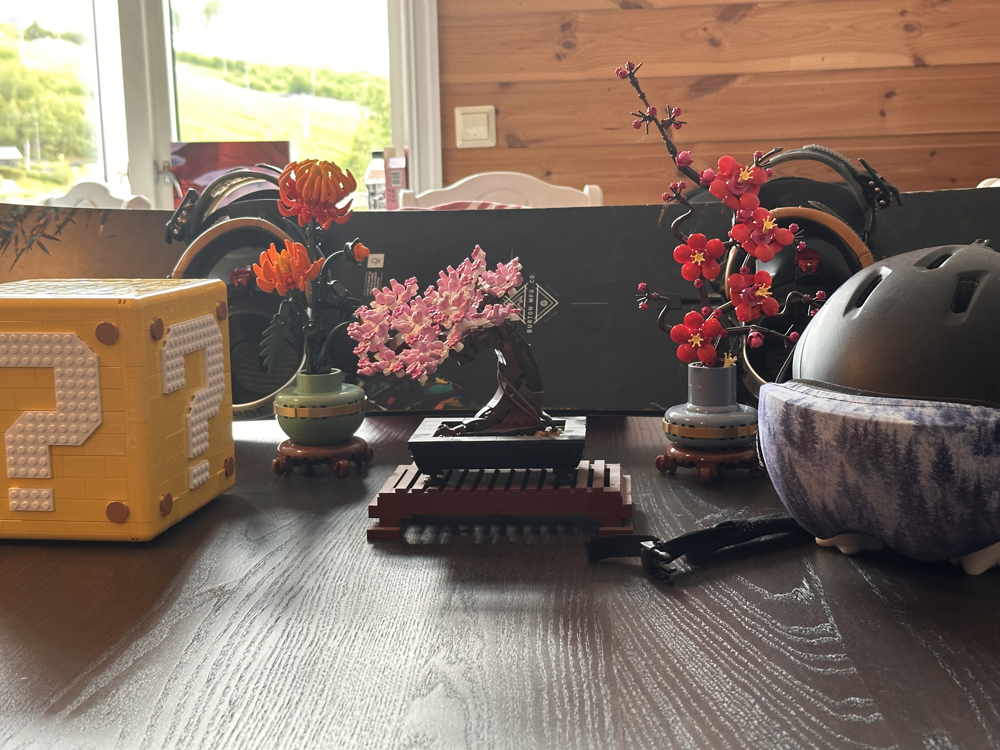
Some of my interesets
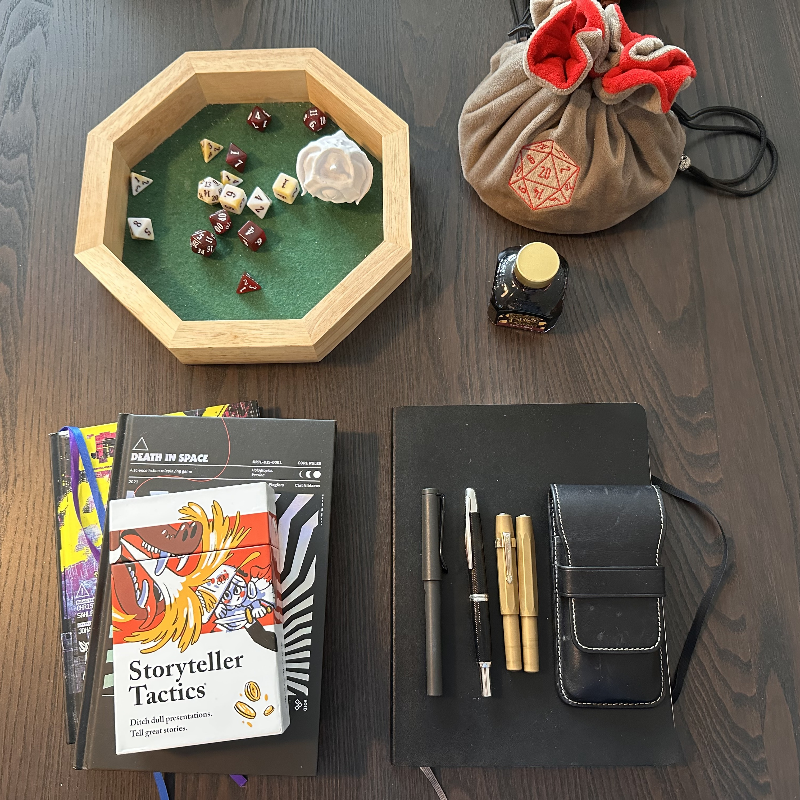
Some more of my interesets
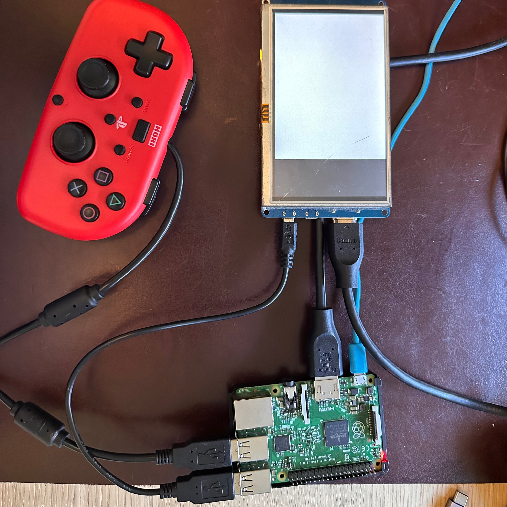
Old Respberry Pi game console project, unfortunetly the LCD display was broken
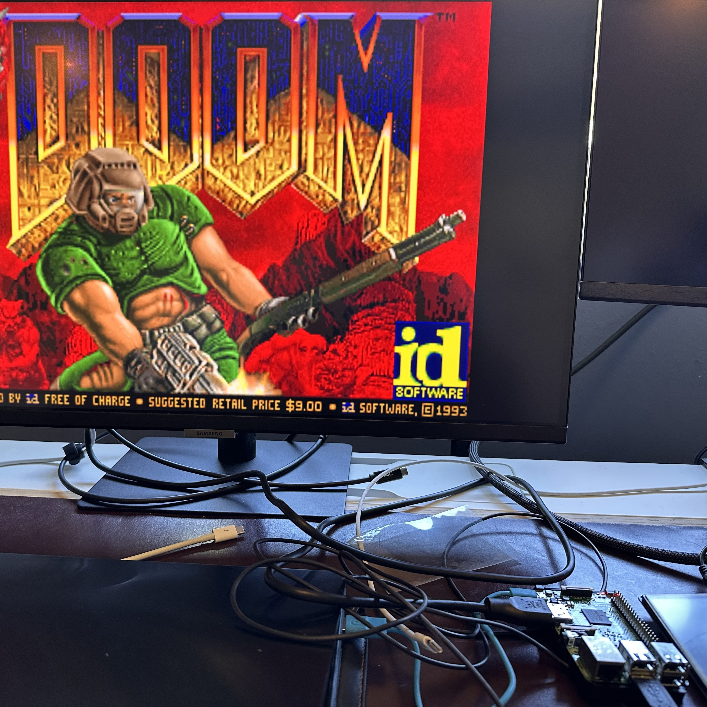
The same Respberry Pi hooked up to functional monitor running doom
Interests and more on me
Learning about the world around me has always been my greatest obsession. From a young age I used to pick apart every device I could find, learning
from every device: the design patterns, the function of every piece and how the pieces fit to make something new.
This has made me really good at fixing broken devices and seeing how new technologies can improve upon old systems.
In middle school I was very interested in how games were made. I was fascinated by online devlogs and dabbled in some RPG Maker.
This led to one of my earliest projects, a Raspberry Pi handheld game console, where I could upload my own games.
By combining a Raspberry Pi, a tiny LCD display, two free merchandise power banks, an old Xbox controller and some Legos for the case. I loaded up some old game emulators.
Unfortunately it wasn't powerful enough to run the game made in RPG Maker.
I am always on the lookout for new solutions in everyday design, learning from them, so that I can put it to practice in my own work.
I wish to create applications that help people and make life more enjoyable for everyone. As I believe that good solutions are those that benefit all.
Portfolio

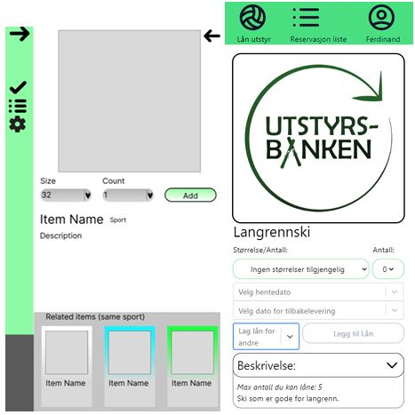
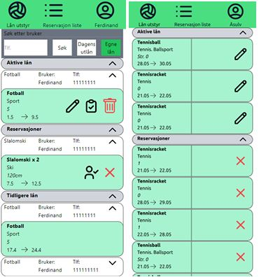
Bachelor Project
Website for lending out sports equipment, for a local non-profit organization. This was a group project where we had full control over the design and implementation of the website.
Bachelor Project
Website for lending out sports equipment, for a local non-profit organization. This was a group project where we had full control over the design and implementation of the website.
What I learned:
- Frontend development
- System design
- Backend development
- Database design
- Web tokens
- Dockerizing
- Communication between fields of communication
- Working in a team
- Scrum development
- User testing
During the project we faced many challenges, one of the biggest was the communication between us the developers and our employer. The employer had no experience with web development, this made it difficult to discuss the requirements and expectations for the project. That is until I made a wireframe of the website and presented it to the employer. This made it much easier to discuss the requirements and explain the technical aspects of the project. After that we got started with designing the stack.
- React: Comunity support and experience
- Axios: Promise-based API calls for faster load
- TypeScript: Easy to read code, debugging and Works great with Axios
- TailWind: Fast and good-looking styling
- Go: Fast and easy to use, great for backend development
- NginX: Reverse proxy for the Go backend
- SQLite: Easy to use and fast database
- Docker: Easy to scale and use for employer
Comparison between old and new design
Page describing a single item, where users select what they want to rent
Page showing what the user has reserved
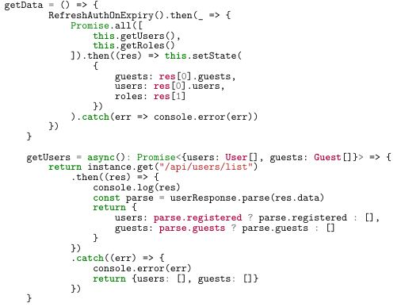
Code preview of promise based fetching, combining Axios and TypeScript

Modell of the tech stack used


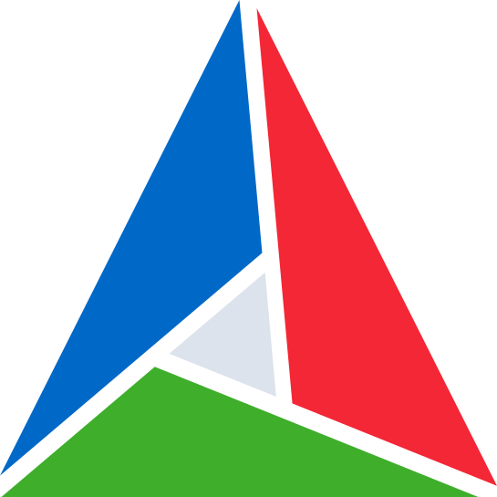
Graphics Engine Sokoban
OpenGL based graphics engine, capable of perspective, lighting, texturing and representing different materials. All demonstrated in my own interpretation of a 3D Sokoban game
Graphics Engine Sokoban
OpenGL based graphics engine, capable of perspective, lighting, texturing and representing different materials.
All demonstrated in my own interpretation of a 3D Sokoban game.
What I learned:
- OpenGL and the rendering pipeline
- Shaders and GLSL
- Matrix calculations
- Texture mapping
- Input handling
- GPU architecture
- CMake
- RenderDoc
The input system consists of: declaration function, where you specify what inputs to listen to, a map, where each input is mapped to an int representing its state (2 = pressed this frame, 1 = being held, 0 = not pressed, -1 = just released) and a function that is called each frame, where the input system automatically updates the map.
The input system simplifies the process of reading IO, where instead of constantly having to parse a pointer to the current screen and a key value, then comparing that result to last frame, you can simply look up the value of the key, as seen in the example images. I also added a function that return true if any of the keys given are being pressed, then since there are no timed events in the game, I can run a function that updates the values in the GPU, only if a button that changes how the game is presented is pressed.
Video demonstration
Image of project with textures
Image of project without textures
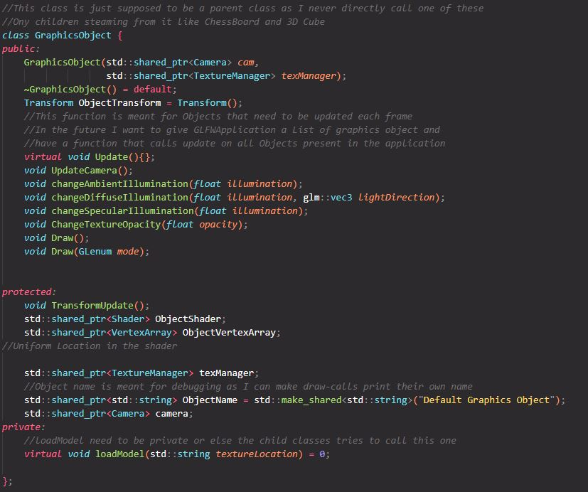
Code example of graphics object abstraction
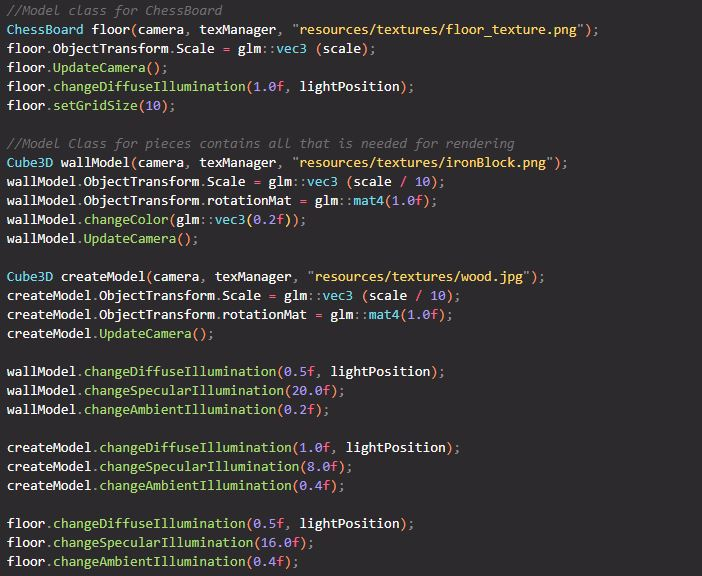
Example of Instantiating different graphics objects
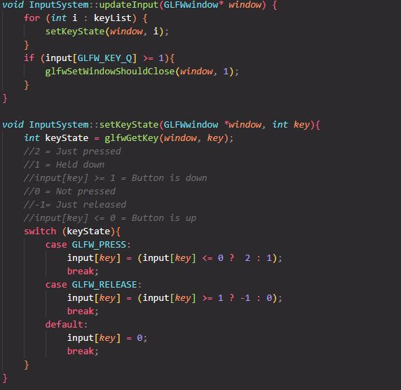
Code handeling user input and maping each key with a value
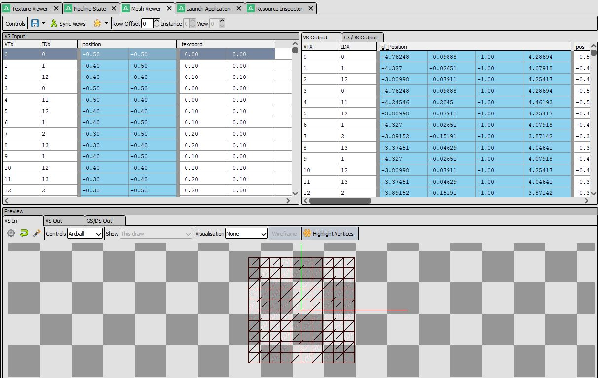
RenderDoc as debugging tool inspecting the floor modell
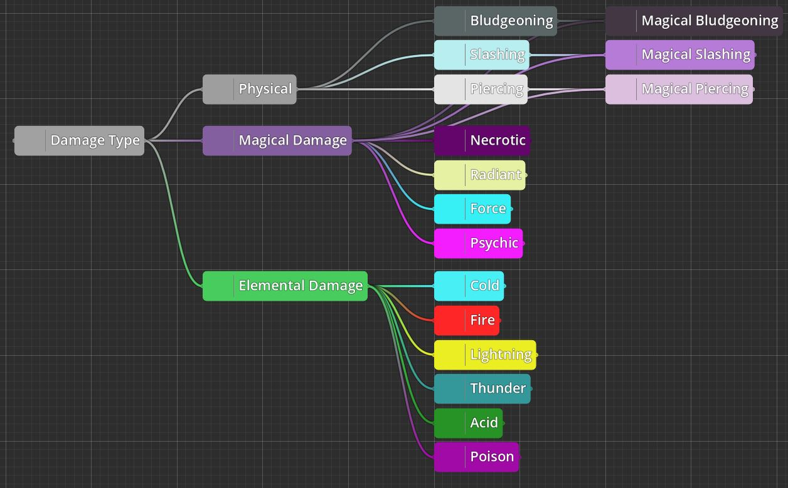

Yggdrasil VTT
Named after the world tree, known in Norse mythology for connecting the different realms; I wanted to create an application for programmers and enthusiasts. To create, modify, and share their own game worlds, for any tabletop role playing game. Using a custom node-based, object-oriented, interpreted programming language, that I am developing for this project
Yggdrasil VTT
Named after the world tree, known in Norse mythology for connecting the different realms;
I wanted to create an application for programmers and enthusiasts. To create, modify, and share their own game worlds, for any tabletop role playing game.
Using a custom node-based, object-oriented, interpreted programming language, that I am developing for this project
Each world would contain custom game rules, represented by different templates and the interactions between them, similar to classes in a object oriented programming language.
Templates are designed to extend from each other, as an example you could make a template for handlingHealth and one for handlingMovement. Using these you could make a template
for enemies and players. While still making it easy to create a wall that can take damage.
Each template consists of Variables, Functions, Signals and Modifications.
- Variables: represents the state of an object, while creating a template you will declare variables that will be populated by values when creating an object from that template. Examples could be Max HP Int, Current HP Int, Inventory Array of Item and Resistances Array of DamageType:Tag
- Functions: is the basic logic of how the template works, as an example the Health template could have functions for Receive Healing Receive Damage, Receive Damage could take a Int, Tag of Damage type and a Bool representing if the damage received is critical. Using this the function can: Check if the Damage type is part of the Resistances array, if it is half the integer received, then using that number subtract it from the Current HP, now set that value as the new Current HP, finally check if the new Current HP is less than 1. If it is send out a Signal, notifying anything that is "listening".
- Signals: used for communicating between templates, either within the same object or between different ones. As an example, if a character has an attack that deals fire damage in an area, all objects within that area will receive a signal saying Take Damage, containing: Int for damage, Tag for Damage type, and Bool for critical. Now since the Health templates Receive Damage function listens to this signal, only the objects within the area deriving from the health tag will be affected. This might lead to fun interactions, where the floor the characters are standing on is destroyed.
- Modifications: describes changes to base functions. Modifications are ment to be combined and stacked with other modifications applied to the character. Keeping to the example of the Health template, we could declare modifications to how damage is received. Say we wanted to represent a character that is extra resilient. We could make a modification to the Receive Damage function, where if the character has Resistance to the damage type the damage is divided by (2 + number of resilient modifiers on character). In addition we could make a modifier that uses the Is Critical Bool by automatically adding (10 * number of modifiers) to any damage received, as long as the Is Critical Bool is true. Now we could combine these two modifiers to represent a character resembling Achilles of Greek myth.
When it comes to playing each world. I want he game rules to come second to the game master's ruling. My solution is to present the changes any action will have to the game master, where they will be prompted to change the outcome of any choice or dice roll.
Since the interpreted language is meant for creating any tabletop game, I found it helpful to add new types of variables:
- Tag: a data structure representing relations between different keywords, example: Magical Slashing can be a tag that is a child of the tag Magical and Slashing, while Slashing is the child of Physical and Damage Type. Now the programer can compare the tag Magical Slashing to the tag Damage Type and Magical, and the system will return true.
- Dice: a data structure representing a dice roll, it can be used to create a dice pool, then be assigned a player to roll it, returning an integer. When performing a dice roll, the player can choose to roll physically and input the values, or let the system roll for them.
Tag tree used to represent relationship between keywords

UI where user can select and filter tags
Different tag selected

Personal notes describing templates

Personal notes depicting action log on how the game master can change the outcomes of actions
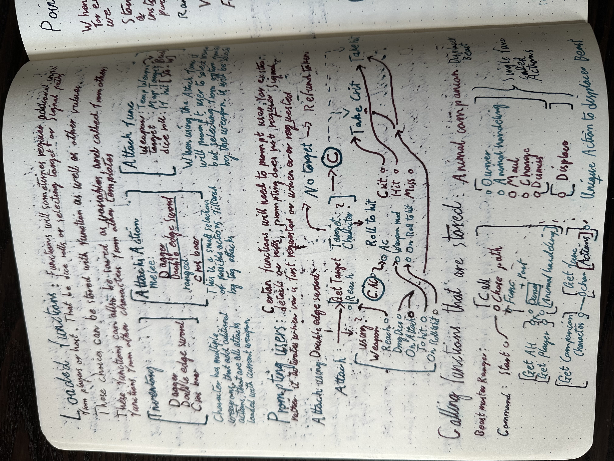
Notes about parsinng values between functions and tempaltes
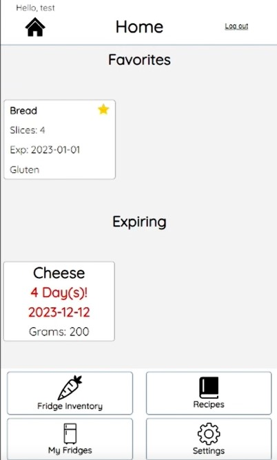
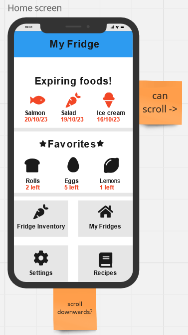
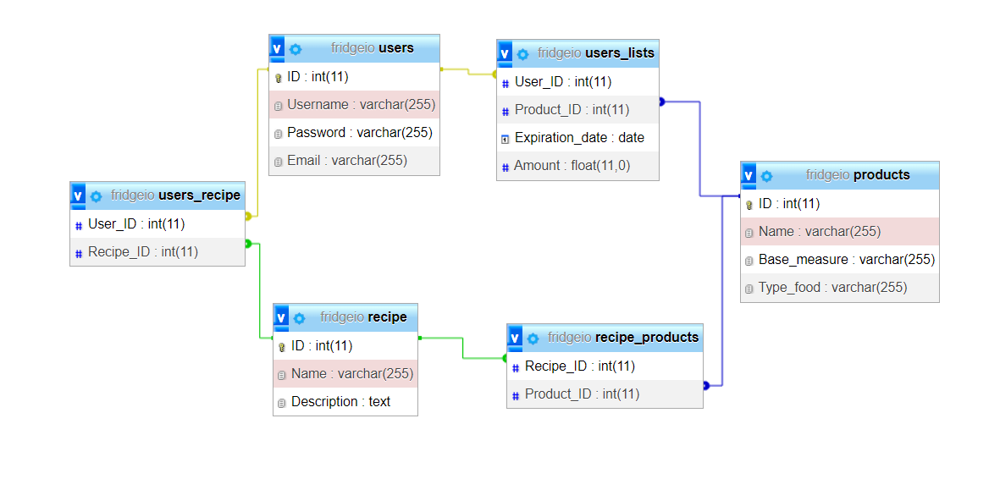
Fridge IO
A test project to simulate the Bachelor project, where I with a team of 3 other students were tasked with creating software of our choice, and connecting it to what we had learned thus far.
Fridge IO
A project meant to simulate the Bachelor project, where I with a team of 3 other students were tasked with creating
software of our choice, and connecting it to what we had learned thus far.
We chose to develop a website for tracking groceries within a dorm kitchen, where each item could have a name, owner, amount, and expiration date.
Where the website would send a notification to the owner when the item was about to expire. In addition we added a feature to store recipes,
where the user could specify amounts and servings, then later use a slider to adjust the amount of servings, and automatically remove the groceries from the fridge.
What I learned:
- Building a frontend and how to connect it to the backend
- Web security practices
- Database design
Video demonstration of making recipes (w/debugg color)
Homescreen of fridge IO
Wireframe of homescreen
Recepies in database
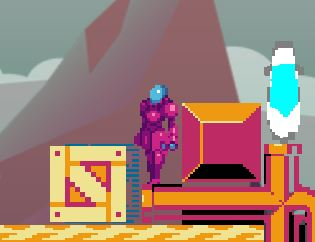
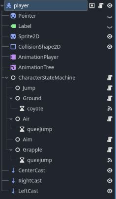

Disc Runner
A simple platformer game where the player can throw a disc to grapple to hooks and activate switches. With a focus on good game feel and generous movement mechanics, the game is an exploration of what goes under the hood in a game development, in order to achieve a polished product.
Disc Runner
A simple platformer game where the player can throw a disc to grapple to hooks and activate switches. With a focus
on good game feel and generous movement mechanics, the game is an exploration of what goes under the hood in a game
development, in order to achieve a polished product.
In this project I was responsible for the character movement, this allowed me to explore what makes a game feel good to play.
For keeping track of the character's actions and better code readability, I created a state machine.
The state machine is a system consisting of multiple scripts called states, that describe how a character should act and a controller script, that parses updates and inputs to the active state.
The states are: Ground, Air, Jump, Aim and Grapple. As an example if the character is in the ground state, and receives a space input, the state will hand over control to the jump state,
which will give the character a vertical impulse and a lower gravity until the air state receives input that the space key is released or the character's vertical velocity is negative, now the state changes to air state with a higher gravity.
If however the player was to walk off a ledge, an invisible timer starts set to 0.1 sec and if the timer elapses without the character registers being grounded, the character is then moved to the air state and therefore loses the ability to enter the jump state.
The invisible timer is referred to as coyote time and is one of the many techniques used to improve the game feel.
- Coyote time: Gives the player leniency in timing the jump action, therefore reducing frustration
- Corner gliding: During the jump action, the game looks for if the player will collide with a ceiling, if it detects a collision it will look again immediately in front of the player. If this check doesn't detect a ceiling, the player will be moved forward. This avoids the frustration of barely hitting a corner and losing all vertical velocity
- Slow motion: During certain actions that require precise input or fast reaction time, the entire game slows down for a short time. This offers the player a small assist that is barely perceived
- Adaptive jump: Gives the player control over how high to jump, by reducing gravity during the jump state, as long as the player holds space
These are just a few of the mechanics I have implemented to make the game feel better to play
Gameplay demo

Code demonstraiting state handeling
Animation tree used in the player character
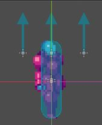
Character with raycasts vissible. Used for collision and Corner gliding
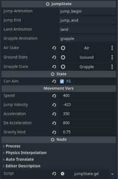
Each state has a list of values that can easily be changed in editor
Contact me